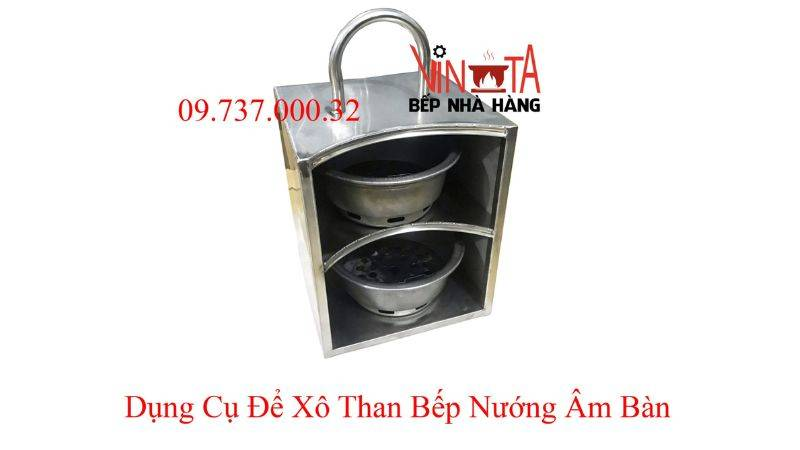

Tại Sao Nên Sử Dụng Phụ Kiện Bếp Nướng Âm Bàn?
1. Nâng cao hiệu quả nướng:
- Vỉ nướng: Vỉ nướng chất lượng giúp phân bố
nhiệt đều, làm chín thực phẩm nhanh chóng, đều đặn, giữ trọn hương
vị món ăn.
- Đá nướng: Đá nướng giúp giữ nhiệt tốt, nướng
chín thực phẩm từ từ, tạo độ mềm ngọt và hương vị đặc trưng.
- Khay hứng mỡ: Thừng chứa mỡ thừa chảy ra từ
thực phẩm trong quá trình nướng, giúp giữ cho bếp nướng sạch sẽ và
an toàn.
- Giấy bạc nướng: Dùng để bọc thực phẩm khi
nướng, giúp giữ ẩm, chín đều và hạn chế cháy xém.
2. Đa dạng hóa món nướng:
- Khuôn nướng: Dùng để nướng bánh, rau củ, hải
sản, tạo hình đẹp mắt và đa dạng cho món nướng.
- Xiên nướng: Dùng để nướng thịt, cá, rau củ,
giúp thực phẩm chín đều và dễ dàng thưởng thức.
- Dụng cụ gắp nướng: Giúp thao tác gắp, lật thực
phẩm trong quá trình nướng an toàn và tiện lợi.
3. Tiết kiệm thời gian và công sức:
- Bàn chải vệ sinh: Dễ dàng vệ sinh bếp nướng sau
khi sử dụng, giúp tiết kiệm thời gian và công sức.
- Găng tay nướng: Bảo vệ tay khỏi nhiệt độ nóng
khi thao tác nướng thực phẩm.
- Túi đựng phụ kiện: Giúp bảo quản phụ kiện gọn
gàng, tránh thất lạc.
4. Nâng tầm trải nghiệm BBQ:
- Hệ thống hút khói: Loại bỏ khói và mùi thức ăn
trong quá trình nướng, đảm bảo không gian thoáng mát, thoải mái.
- Lò nướng than hoa: Giúp giữ than hồng lâu hơn,
tiết kiệm nhiên liệu và nướng thực phẩm thơm ngon hơn.
- Bàn đá nướng: Tạo điểm nhấn sang trọng cho
không gian bếp nướng, mang đến trải nghiệm BBQ đẳng cấp.
Các loại phụ kiện bếp nướng âm bàn cần thiết
1. Vỉ nướng:
- Phân loại:
- Vỉ nướng bằng gang: Bền bỉ, giữ nhiệt tốt, giúp thực phẩm
chín đều, thơm ngon.
- Vỉ nướng inox: Nhẹ, dễ vệ sinh, không gỉ sét.
- Vỉ nướng thép không gỉ: Chống dính tốt, dễ dàng lau chùi.
- Ưu điểm và nhược điểm:
| Loại
vỉ nướng |
Ưu
điểm |
Nhược
điểm |
| Gang |
- Bền bỉ, chịu nhiệt cao
- Giữ nhiệt rất tốt, giúp thực phẩm chín đều
- Cho ra vân nướng đẹp mắt
|
- Khá nặng
- Giá thành cao hơn so với inox
- Cần được bảo quản kỹ để tránh gỉ sét
|
| Inox |
- Nhẹ, dễ di chuyển
- Dễ vệ sinh, không bị gỉ sét
- Giá thành phải chăng
|
- Độ bền không cao bằng gang
- Khả năng giữ nhiệt kém hơn gang
|
| Thép không gỉ |
- Chống dính tốt, hạn chế tối đa cháy khét
- Dễ dàng lau chùi, vệ sinh
- Bền bỉ, không gỉ sét
|
- Giá thành cao
- Khả năng giữ nhiệt không bằng gang
|
2. Xiên que:
- Phân loại:
- Xiên que kim loại: Chịu nhiệt tốt, tái sử dụng được nhiều
lần.
- Xiên que tre: Thân thiện với môi trường, an toàn cho sức
khỏe.
- Xiên que gỗ: Thêm hương vị đặc trưng cho thực phẩm khi
nướng.
- Lựa chọn xiên que phù hợp:
- Xiên que kim loại: Thịt, hải sản, rau củ quả cứng.
- Xiên que tre: Thịt mềm, hải sản, rau củ quả.
- Xiên que gỗ: Thịt, hải sản, rau củ quả.
3. Kẹp gắp, xẻng lật:
- Giúp thao tác nướng dễ dàng và an toàn hơn, tránh bị bỏng tay.
- Nên chọn kẹp gắp, xẻng lật bằng inox hoặc thép không gỉ, chịu
nhiệt tốt.
4. Bàn chải vệ sinh:
- Loại bỏ dầu mỡ và thức ăn thừa bám trên bếp sau khi nướng.
- Nên chọn bàn chải có đầu cọ cứng, chịu nhiệt tốt.
5. Tấm lót chống dính:
- Giúp vệ sinh bếp nhanh chóng, tiện lợi, không cần sử dụng hóa
chất tẩy rửa.
- Chọn tấm lót có kích thước phù hợp với bếp nướng.
6. Than hoa không khói:
- Ưu điểm:
- Không tạo khói, đảm bảo an toàn cho sức khỏe và môi trường.
- Dễ dàng nhóm than, cháy lâu, tiết kiệm nhiên liệu.
- Thực phẩm chín đều, giữ được hương vị thơm ngon.
- Cách sử dụng:
- Cho than hoa vào chậu đựng than, xếp thành tháp.
- Dùng bật lửa hoặc quẹt than để nhóm than.
- Chờ đến khi than cháy hồng đều thì bắt đầu nướng.
- Địa chỉ cung cấp than hoa uy tín:
- Các cửa hàng chuyên bán đồ nướng.
- Các siêu thị lớn.
- Các trang web thương mại điện tử.
7. Ống hút khói bếp nướng:
- Vai trò: Loại bỏ khói, mùi thức ăn trong quá trình nướng, đảm
bảo bầu không khí trong lành.
- Các loại ống hút khói trên thị trường:
- Ống hút khói dạng chữ L.
- Ống hút khói dạng chữ T.
- Ống hút khói dạng thẳng.
- Lắp đặt ống hút khói đúng cách:
- Xác định vị trí lắp đặt phù hợp.
- Lắp đặt theo hướng dẫn của nhà sản xuất.
- Đảm bảo ống hút khói được kết nối chặt chẽ với bếp nướng.
8. Một số phụ kiện khác:
- Chậu đựng than inox: Giúp giữ than gọn gàng, an toàn.
- Kiềng lẩu bếp nướng: Nâng cao tiện ích, giúp bạn nấu nướng đa
dạng.
- Dụng cụ xiên nướng: Xiên thịt, rau củ quả dễ dàng và đẹp mắt.

Kinh Nghiệm Chọn Mua Phụ Kiện Bếp Nướng Âm Bàn
Dưới đây là một số kinh nghiệm hữu ích giúp bạn chọn mua phụ kiện
bếp nướng âm bàn:
1. Chọn chất liệu an toàn, bền bỉ:
- Ưu tiên các chất liệu như inox 304, gang tráng men, đảm bảo an
toàn cho sức khỏe và không bị han gỉ theo thời gian.
- Tránh các chất liệu mỏng manh, dễ gãy, cong vênh trong quá trình
sử dụng.
2. Kích thước phù hợp với bếp nướng:
- Đảm bảo kích thước vỉ nướng, xiên que, kẹp gắp, ... vừa vặn với
bếp nướng, giúp thao tác dễ dàng và an toàn.
- Tham khảo kỹ kích thước bếp nướng trước khi mua phụ kiện để lựa
chọn sản phẩm phù hợp.
3. Thương hiệu uy tín, chất lượng:
- Ưu tiên lựa chọn phụ kiện của các thương hiệu uy tín, có nguồn
gốc xuất xứ rõ ràng, đảm bảo chất lượng và an toàn vệ sinh thực
phẩm.
- Tham khảo đánh giá của người dùng trước khi mua để có thêm thông
tin về sản phẩm.
4. Giá cả hợp lý:
- So sánh giá cả của các sản phẩm cùng loại từ nhiều cửa hàng khác
nhau để lựa chọn được mức giá tốt nhất.
- Xác định ngân sách trước khi mua và lựa chọn sản phẩm phù hợp.
Cách vệ sinh và bảo quản phụ kiện bếp nướng hút âm
Việc vệ sinh và bảo quản phụ kiện bếp nướng âm bàn đúng cách không
chỉ giúp kéo dài tuổi thọ cho sản phẩm mà còn đảm bảo an toàn vệ
sinh thực phẩm cho gia đình bạn. Dưới đây là hướng dẫn chi tiết cho
từng loại phụ kiện:
1. Vỉ nướng:
a) Vỉ nướng gang:
- Vệ sinh:
- Đợi vỉ nguội hẳn, dùng bàn chải lông cứng và nước nóng cọ
rửa dầu mỡ, thức ăn thừa.
- Tránh dùng nước rửa chén vì có thể làm mất lớp dầu bảo vệ
vỉ.
- Tráng kỹ bằng nước nóng và lau khô ngay lập tức.
- Bảo quản:
- Thoa một lớp dầu ăn mỏng lên bề mặt vỉ sau khi vệ sinh và để
nguội hẳn.
- Treo vỉ ở nơi khô ráo, thoáng mát, tránh ẩm ướt gây gỉ sét.
b) Vỉ nướng inox:
- Vệ sinh:
- Chờ vỉ nguội bớt, dùng bàn chải cọ rửa với nước nóng và nước
rửa chén.
- Có thể ngâm vỉ trong nước nóng pha loãng nước rửa chén
khoảng 30 phút để dễ dàng loại bỏ dầu mỡ.
- Rửa lại bằng nước sạch và lau khô.
- Bảo quản:
- Treo vỉ ở nơi khô ráo, thoáng mát.
c) Vỉ nướng thép không gỉ:
- Vệ sinh:
- Tương tự như vỉ nướng inox.
- Tránh dùng vật sắc nhọn cọ rửa, có thể làm xước bề mặt vỉ.
- Bảo quản:
- Treo vỉ ở nơi khô ráo, thoáng mát.
2. Xiên que:
- Vệ sinh:
- Đối với xiên que kim loại: Rửa sạch bằng nước nóng và nước
rửa chén, sau đó lau khô.
- Đối với xiên que tre/gỗ: Nên thay mới sau mỗi lần sử dụng để
đảm bảo vệ sinh.
- Bảo quản:
- Xiên que kim loại: Bảo quản ở nơi khô ráo.
- Xiên que tre/gỗ: Bảo quản ở nơi khô ráo, thoáng mát, tránh
ẩm mốc.
3. Kẹp gắp, xẻng lật:
- Vệ sinh: Rửa sạch bằng nước nóng và nước
rửa chén. Lau khô sau khi rửa.
- Bảo quản: Treo ở nơi khô ráo, thoáng mát.
4. Bàn chải vệ sinh:
- Vệ sinh:
- Rửa sạch bằng nước nóng và nước rửa chén sau mỗi lần sử
dụng.
- Loại bỏ dầu mỡ và thức ăn thừa bám trên bàn chải.
- Phơi khô ở nơi thoáng gió.
5. Tấm lót chống dính:
- Vệ sinh:
- Dùng khăn ẩm lau sạch bề mặt tấm lót sau khi sử dụng.
- Nếu cần thiết, có thể rửa bằng nước ấm và nước rửa chén.
- Bảo quản:
- Để tấm lót khô ráo trước khi cất giữ.
- Bảo quản ở nơi khô ráo, thoáng mát.
6. Than hoa không khói:
- Bảo quản:
- Bảo quản than ở nơi khô ráo, thoáng mát, tránh ẩm ướt.
- Đóng kín túi/hộp đựng than sau khi sử dụng.
7. Ống hút khói bếp nướng:
- Vệ sinh:
- Thường xuyên kiểm tra và vệ sinh ống hút khói để loại bỏ dầu
mỡ và bụi bẩn tích tụ.
- Tháo rời các bộ phận của ống hút (nếu có thể) và rửa sạch
bằng nước nóng và nước rửa chén.
8. Một số phụ kiện khác:
- Chậu đựng than inox: Vệ sinh tương tự như
vỉ nướng inox.
- Kiềng lẩu, dụng cụ xiên nướng: Vệ sinh
tương tự như kẹp gắp, xẻng lật.
Lưu ý:
- Luôn vệ sinh phụ kiện ngay sau khi sử dụng để dễ dàng làm sạch.
- Không sử dụng chất tẩy rửa mạnh, có tính ăn mòn để vệ sinh phụ
kiện.
- Kiểm tra và thay thế các phụ kiện bị hỏng hóc, rỉ sét để đảm bảo
an toàn khi sử dụng.